Onslaught maps walkthrough
Power node isolated - Female announcer
From the many gametypes UT2004 offers, onslaught is the most popular one. It features vehicles, nodes, action, turrets, weapons and more action. Figuring out where to go is a part of the game, but if things take too long, you're useless to your team.
This is where I come in. On this page, I'll overview the layout of the levels
and how it should be played (IMO, of course). This won't cover the basics of
onslaught; there are plenty of guides on this subject already, so study them
if you're unfamiliar with them.
Next point: the illustrations used are made by Kurt 'KurlonT' Rodriguez. He
has made some extra ones for the Community
Bonus Pack 2 and the ECE
maps as well...you can find these pics
here and here.
The described maps here cover the non-ECE version of the maps.
Finally: I will only cover the default link setup. Other link setups require
other approaches, so be flexible, will ya?
Good. Let's get started...
ArcticStronghold
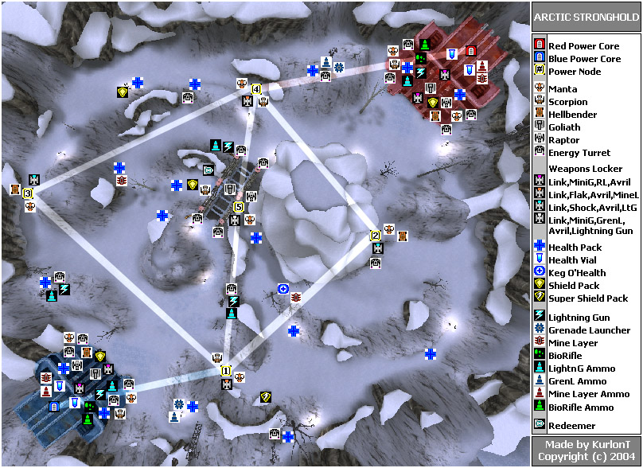
Overview:
Positioned in a snowy location, this map provides a great deal of Z-axis due
to the many hills and ridges. This makes it hard to drive around, so get to
know where each road goes to. ArcticStronghold isn't a big level, but the differences
in height will make it hard to travel from A to B.
Match description:
Both bases are located close to their first node; you reach it by going
to your right after the first slope when you exit your base. This first node
has 2 turrets: one near the bridge and one behind the node; this one can only
be reached from the power core.
After setting up the first node, you can keep going straight and you'll end
up at the next node. Red team comes across the node on their path (nr 3). It's
almost hidden behind a small hill and has a bit of height advantage. Blue team
must cross a ski-run to get to node nr 2. Both nodes are located close to the
enemy base, but some sharp peaks block the way. These can be overcome if they
have to: blue can climb to the left from the base and red even has a tunnel.
But these are stealth routes; the main combat will take place in the big valley
below, which crosses the map in an 'S'-shape from point 3 to 2. Node 5 lies
below the bridge. This node has the best goodies, including a tank and 4 turrets!
The best item is undoubtedly the redeemer, located on the small edge near the
node. You can reach it with a shield jump, but it's preferred to drop down from
above (there's a jump pad near the node) or use a manta or raptor.
The fact that this point lies closer to the red base than blue's base has advantages
and disadvantages. Red can claim the node first, but they have to make quite
a detour to reach blue's first node.
Personally, I don't like the default link setup. The turrets are hard to reach
and the slopes allow for easy sneak attacks. And that's too bad, because you
really need to defend your first node. On many occasions, the match is even
decided once the first node goes down. Sure, the other team can swarm the node
with a big amount of vehicles and infantry, but in the mean time, the other
team takes control of all 3 nodes, which is extremely hard to come back from.
Comebacks are easy in theory: take back the node, cover the place with
spider mines and man the turrets. Then split the team in two: one group takes
back one node (preferrably the center one, to prevent redeemer launches), and
then immediately proceed by tearing down their first node. In reality,
attackers simply spawn from a node that isn't under attack and keep the
pressure on your first node, no matter how many defenders you have (which is
always too low).
The 'up' team hasn't won yet: each base has 4 turrets, which can provide decent
coverage for everything that tries to get to the base or the first node.
Strategies/tactics:
- The best way to deal much damage to the power core is to get manta's in there. There's no shock rifle among the starting kit, which makes it extremely hard for defenders to stop the assault
- It doesn't matter which second node you take first (even though the center one has the best stuff), but it does matter which node you keep long enough to destroy their first node. Don't waste efforts on taking down sidenodes if their first node is vulnerable.
- if things get too rough on the first node, then try to carjack abandoned vehicles. As long as you're driving around in one, they won't have access to it.
- don't leave the provided roads unless you really know where you're going. It's better to take a detour than trying too hard to cross that one challenging peak.
- Don't forget that your base spawns a tank. Bring it over the bridge to keep attackers away from their first node.
Crossfire
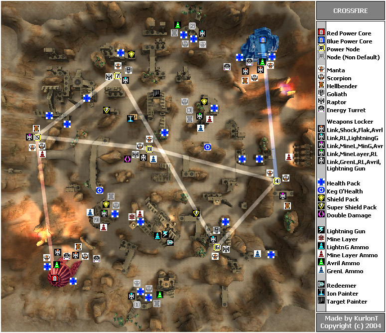
Overview:
Crossfire consists of high ruins and pillars that are scattered around one big
mountain. These ruins don't make real obstacles; you can easily get around them.
They do provide some good coverage for infantry, though. With some practice
you can jump from building to building and pick up some nice things along the
way. Navigating your vehicles can be tough, but it's certainly easier than on
ArcticStronghold. Raptors can be a real pain because they have an abundance
of stuff to hide behind.
Match description:
From your base, the shortest way to your first node is to take the left route,
between the volcano and the side of the level. This is quite a long trip, so
share that manta and scorpion. The hellbender, is set up to drive to the top
(it can get to the first node as well, but this should be covered by the rest
of your team).
The best way to win on this map is by securing the center node. It's also the
easiest to find among those ruins: just proceed uphill. The height advantage
is good, but enemies can come from almost every direction. Besides its location,
it also offers easy access to a variety of power-ups. The damage amp is best
used to defend the place, and if you check the map, you can find the ion painter,
target painter and the redeemer within walking distance (the redeemer
is on an edge slightly below the building), ready to take out the tank nodes
(5 and 7).
These tank nodes provide the best resources to conquer the top, by the way.
Make sure you don't forget about this side of the battlefield. When heading
for opponents' nodes, just follow the colored beams. They stick out nice against
all the brownish scenery.
The power cores have a reasonable surrounding from the rest of the level, but
there is no way it can seriously stop attacks from the hill. Take back your
first node as fast as you can, because the turrets can only hold up attackers;
they can't stop them.
Strategies/tactics:
- don't launch your attack on the power core from their first node: it's vehicles are too weak. Use the tanks to drive on the scenery to hit the power core from afar, or to simply pick on attacking enemies.
- use raptors and manta's to get to the superweapons, and use these to take out the center node (if it isn't yours).
Dawn
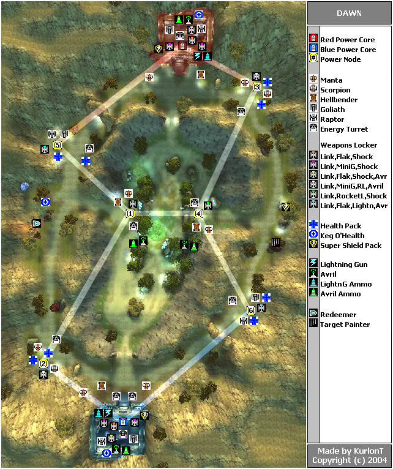
Overview:
This map is easy to describe: two gigantic ellipses inside each other, the inner
one just somewhat lower than the outer. There's an entrance to the center on
each point of the compass.
Nodes are out in the open, though surrounded by some sort of wall, which prevents
attacks from far range.
Each base has 2 first nodes: one close one to your left and one to your right,
which lies a bit further. The two center ones are connected, have a turret for
protection and are really close to each other.
And then there are the bases. The turrets at the entrance can really reach out
for enemy's (they can almost defend the nearby nodes as well) so manning them
is a good idea if the core is vulnerable. Inside is a third turret, but this
can be avoided a lot better if the attackers stay on the surroundings of the
base.
Match setup:
Make sure your team starts out on both sides towards the nodes. After that,
the big fight for the center nodes start. It's the best if you can secure both
points before advancing toward one of their first nodes, but this usually won't
work. If a center node isn't in danger for 10 seconds, it means the tank is
still underway.
At a certain moment, you'll have to agree on your team to take a risk and focus
on one side of the map and focus on one of their vulnerable nodes. At this moment,
put the speed on things. Team up a tank and a fast vehicle. Let the tank destroy
the node and let the other player quickly take over the place, while the tank
stands guard. After that, immediately start the attack on the power core. About
half your team should worry about the center: keep their center node up, and
- if possible - locked.
The other team can come back easy by destroying their center node. Taking back
their lost first node is also possible, and in many occasions even easier to
reach with the base tank.
The 'quick attack on one side' strategy doesn't guarantee a straight win (unless the other team decides a mass defence of the base), but gives an important edge when the game goes in overtime. It's easy to maintain a status quo on the middle and this is always in the advantage of the team that has the most health in their core left.
Strategies/tactics:
- you can reach the raptor in the base fast by double jumping to the lamp underneath, and then another double jump to the landing platform.
- don't forget about the target painter and the redeemer! The redeemer is hidden in a crashed vehicle, the target painter somewhere in the bushes.
- long range fire is a real threat on this map, especially from tanks. Tanks can even aim at both center nodes from the side entrances to the center valley.
- raptors shouldn't fly too high, as they can be seen from virtually everywhere. Stay low and keep an eye out for tanks and unguarded nodes.
- the distances are pretty big in this map, so don't travel between nodes on foot (except between the center ones).
- the hills that make out the border of the valley can be climbed for some good sniping with AVRiL's. Even tanks can be some good use up there
- Infantry will probably be a bad choice though. It's a real long way to walk somewhere, and you're very vulnerable in here. So please, either transport to the next node or wait if there are no vehicles. Only between the middle nodes you can walk back and front on foot.
- check here for some more stuff regarding ONS-Dawn
Dria
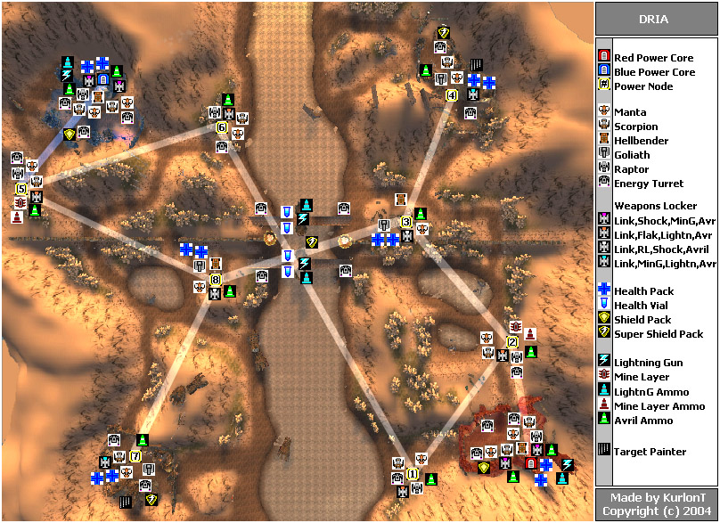
Overview:
Four ruins, four houses, two bridges that cross a big frozen lake, many trees
that provide camouflage, a few hills and some sort of Chinese wall that, together
with the frozen lake, splits the map into four segments. And believe it or not,
but there is still a lot of open space. As you can imagine, Dria is huge.
Match description:
Players start out in a large ruins, with plenty of protection from the place
and the nearby hill. The power core is somewhat on the open, though, so keep
the shield up. You start out with plenty of fast vehicles, so you should be
able to get everywhere without carpooling or having to walk anywhere. Spread
out, so both the first node as both the second nodes are covered. In my experience,
the raptor is the best choice to get to the tank node (node 3 or 8).
Both the river nodes (1 or 6) and the tank nodes consist of broken down houses.
These houses provide reasonable coverage for infantry, but the node can be seen
(and shot) from large distances.
The tank nodes are pretty close to each other, so expect quite some fireworks
in this area. It's usually a good idea to man the turrets at the bridge entrance.
The Chinese wall separates the battlefield, making backup (both in offence and
defence) very hard. Keep your team split into four parts: 2 parts take care
of the defence of the nodes, while the other 2 use fast vehicles to try to break
down the nodes on the other side of the river.
As soon as a second node gets captured, the other team must fall back to the
first node (previous defenders of that node now start defending the first node,
and the attack squad that now has a locked node as target now try to take back
their destroyed first node). Due to the large distances between nodes, comebacks
are still possible at this point...
Things get worse once the first node falls. Attackers only have to keep that
first node down, while all the adjacent nodes start draining and the rest of
their team abandones the defense to take over all these isolated nodes. All
defenders should focus on getting that first node back (except maybe one or
two that keep guard at the remaining second node); on occasions, they should
even suicide to quickly get back to the main base.
The game is practically over when both second nodes are conquered. The losing
team has to split up their attackers while keeping a good defense at the first
node, while the other team can swarm over from two nodes. The large distances
make it almost impossible to come back in the game. All that the losing team
can do is delay the enemies as long as possible. And since the power core holds
a big amount of vehicles, they can do this very easy.
If the team can take over the first node, they shouldn't forget to defend it
well, as there will be a huge amount of enemies heading that way. Also: don't
forget the power core can be attacked both from the river node and the first
node.
Now...you might have noticed that I skipped over the second ruins. The reason
is that these don't live up to the pace and usefullness of the game. They don't
provide an additional route, and are too far away to be of essential use in
the game. It's not a bad idea to get there from the tank node with an airborne
vehicle, touch it and proceed to attack the opposing river node (never link
up this node!!!). This provides a somewhat better attack position, but for this
to work, you have to be able to rely on your defensive force at the tank node,
and this is a rare occasion. Whenever the adjacent node falls, you have an additional
way to go get it back, but you're fighting against the time, as your node will
drain quickly and that adjacent node is quite far away.
Taking that node when you're on the offense is a better idea (when you already
have both their second nodes). In this case, it will provide for an extra
position to attack the first node from...a location that can't be attacked
directly.
Strategies/tactics:
- red's river node (node 1) lies further away from the tank nodes than blue's river node. This can put more pressure on red's tank node, but don't forget that tanks can also wander off to destroy blue's river node.
- never leave your nodes undefended: if it gets under attack it will be broken, because defenders must travel a big deal to get there (assuming that someone will try to keep the node up)
- every node holds an AVRiL. In combination with the open grounds, it can make infantry a feared defender
- if you can get on the towers on top of the bridge (where the lightning gun is), you can take clear shots at either tank node
- a good manta driver can hop in the houses on the second nodes, quickly clearing all the infantry inside
- when using their speed and some debris, manta's can make it over the Chinese wall
- the second ruins contains a target painter on top of the tower, but I haven't seen a good use of it so far
FrostBite
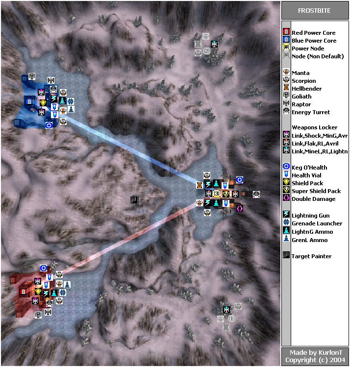
Overview:
This map is small, dark and icy, finished with 3 tall castles. In front of each
castle is an open space that serves as a parking lot for the vehicles. Each
base is connected to the central node by a narrow riverbed with some steep hills
on the side. The alternative route to the node goes over the side, but this
is longer and harder to travel.
Match setup:
Most of the fighting takes place in front of the node. Vehicles will fight each
other in front of the castle and on the outskirts of the riverbed. Make sure
to keep the enemy tank at bay, or all your efforts in claiming the node will
be in vain.
Meanwhile, the ground troops hide in and nearby the castle. There are teleporters
to get a height advantage, and a couple great power-ups to maintain your status.
Infantry that have taken the long way can even pick up spider mines and grenades
from the side nodes (node 1 or 2), which can be of great use here. This is all
close combat, so bring in good reflexes.
The hill overlooking the castle contains a target painter. Airborne vehicles
can grab the target painter the fastest, but the platform isn't fit for a proper
landing, so you often lose your vehicle while doing so. Both sides have a spot
where infantry can slopedodge to reach the
top of the hill.
Claiming the node is only half the battle. Man the turret, and be on the lookout
for incoming enemies. Ground vehicles or infantry rarely make it close to the
enemy base, so use airborne vehicles instead. The power node is very well-protected
by the castle, so be carefull...
Strategies/tactics:
- try to carjack their stuff to deny them their own vehicles
- use your raptor to scout and take on the enemy tank
- keep your tank away from the center node square, but be able to shoot at everything that drives on it. Especially blue has a good spot: they can park their tank and take out the node relatively safe. This makes the node harder to hold for the red team, but red team can defend it a lot easier if they can control the node
- when attacking the power core, make sure to cover it with grenades. Put the power core as a shield between you and the enemies, and detonate the grenades whenever they come too close to them
Primeval
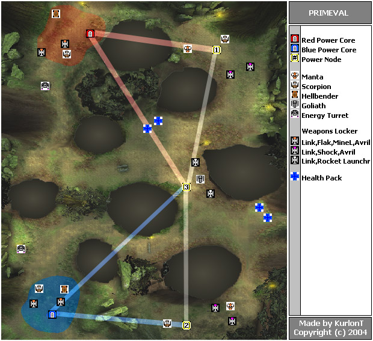
Story introduction:
Ah...nature; the pure sound of singing birds and that smell of gigantic trees.
It's really calming, refreshing and ...what? We lost the center? we lost
the center??!? Aaaargh. Bring out the guns and load up the hellbender,
ASAP! It's time to...to...ehm...Ah, heck. Shoot anything that moves!
Overview:
Being one of the smallest maps, Primeval matches go extremely fast if teams
are unbalanced either by skill or by players. Even with a right roundup, it's
a game where the tide can turn fast. These tips might just push the balance
to your advantage.
In layout, Primeval resembles a reversed capital 'B' with only minimal height
difference. The side node lies really close to the power core. Ironical enough,
this node is reached the fastest on foot, since the shortest route is a narrow
passway. The passway can be passed with a manta and (if you're carefull) a scorpion;
don't try it with anything else!
The central node is slightly closer to the sidenode than to the power core,
but it can be reached by both sides with ease.
Match setup:
Make sure the hellbender is completely filled and that the scorpion has (at
least) one passenger on top before heading toward the center. Any remaining
infantry should take the pathway to the sidenode and link it up. This node is
really necessary to perform a decent attack on the center node, because you
will need all the force you can get to control it.
There will be action in the center node for the entire length of the match;
everyone will be busy combo-ing skymines, throwing spidermines or shooting rockets,
usually in the direction of the enemies' territory. If you are unfamiliar with
the concept of spamming, then you'll learn about it soon enough. It simply comes
down to shoot more amounts and more powerfull stuff at them than they can throw
back.
Taking control of the center node will take a while, let alone building
it. Stay out of sight while you link up, and make sure to double-, triple- and
even quatriplelink to team mates that are trying to set up the node. Once the
center node is set up, things get easier. The tank is a very helpfull tool on
this level, so make sure you keep it in working condition. Therefore, it's best
to drive it back to your own territory, and pick on enemy infantry at the center
from far away.
The fight is far from over, though. It isn't easy to infiltrate the enemy base,
because about the entire team spawns there. On many occasions, it's even a good
idea to focus on their sidenode first (using fast vehicles): if you can take
it down, the defending team has less vehicles. And if you can put your own node
up, you can attack the power core from 2 sides.
Strategies/tactics:
- the link gun is a crucial part to win the match; mostly to link up and maintain the center node, but also to repair the tank when needed. Node defenders can spend entire matches linking up stuff
- if your team is in control of the enemies' side node, block the passageway with spider mines
- bring spidermines to the center: use them to slow down assaults while you remain on a safe distance
- there aren't many vehicles in this map, so use the ones you have wisely
RedPlanet
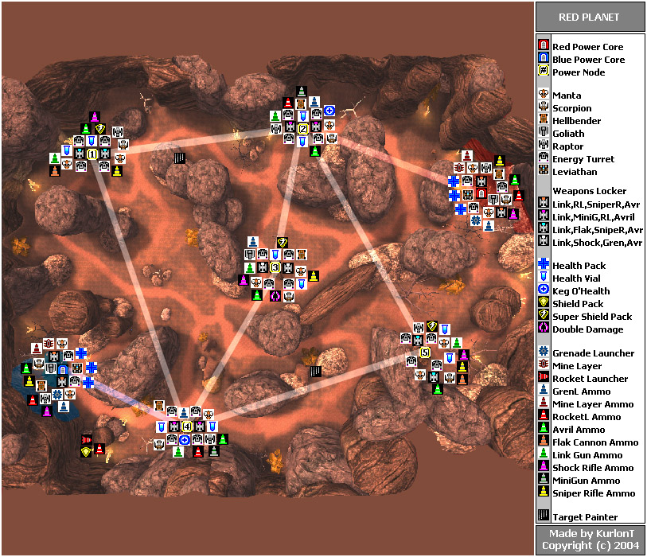
Overview:
This enormous map might be smaller than Dria, but it sure isn't fit for
walking around in. Long, broad plains and huge mountaintops make you feel really
small in this level. The firepower adds to that illusion, since each base starts
off with nothing less than a leviathan!
Each node is a fortress, guarded with 4 turrets. This allows for some great
defense...assuming someone is going to defend.
Match setup:
This map is just too big to get to more than one destination, so spread out
your team. Send an airborne vehicle toward the first node, and the leviathan
through the main gate in the direction of the center node, with at least
an extra person following him. Also, make someone start out going to the left
sidenode (5 for red, 2 for blue), because that node gets out of reach once you
get to the other nodes. All other players can provide backup for either group.
Going straight from the first node brings you toward the right sidenode (2 for
red, 5 for blue). Forget about the target painter; the place is too big for
a decent bombardment, and the nodes are located indoors.
Meanwhile, the main action will take place on the center node: it's the easiest
to reach, and provides the shortest path to the opponents' first node. Keep
in mind that the huge rocks on the side prevent you to go defend a side node
that's under attack, so you better push straight through to their first one.
While the action goes on between the three nodes, don't forget about your own
defenses. It's unlikely that your team will control all 3 nodes, so keep your
first node guarded as long as it's vulnerable.
When their first node falls, make it your priority to capture all other central
nodes before focussing on the power core. If you manage to capture the
node, guard it well: enemies will swarm in from wherever they have nodes.
Strategies/tactics:
- keep mental notes on the positions of the levi's. Back them up with AVRiL's
and repair them when needed.
- just because you can gather a better fleet than your opponents doesn't make
you the winner of this map: three nodes are impossible to defend. Manta's
and raptors can take over undefended nodes before backup can come in (this
map is huge, remember?). Therefore, you need defense on the first node when
the enemy team is even just building a node.
- I don't know why the weapon lockers contain normal sniper rifles, but I suggest you stick to turrets for sniping. It's 'just a little' better against vehicles
- take out turrets while coming close to a node, unless you have more urgent
concerns. They can see a lot, so don't neglect them
- When in a manta, don't try to crush people that are standing on a node. The peaks will make your vehicle stuck
Severance
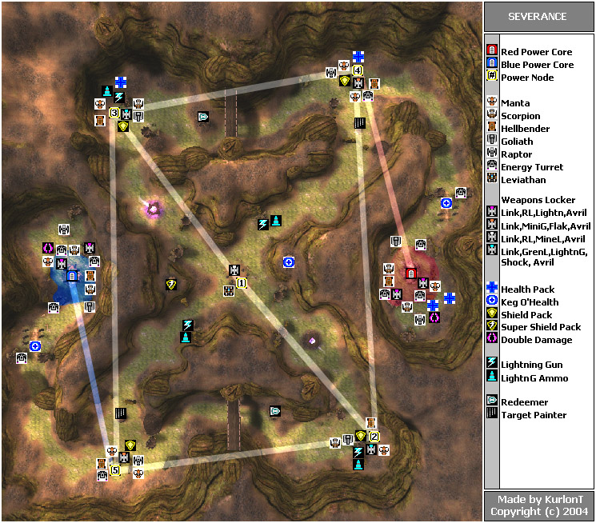
Story introduction:
3...2...1...fight! I spawn near the manta, and run to it like hell. I immediately
get in and fly off. Oops, I ran over my teammate...luckily team damage is off.
Why was he heading my way in the first place? I make my way over the ruins and
head for the node. There's a raptor slightly ahead of me but I don't give up.
He stops to land! Yes, I win! I drive over the node at full speed and jump out
at exact the right time. Then I realize I don't have weapons. By the time I
picked up the weapon locker, the raptor driver is already linking up. I could
link up to him, but that wouldn't give me personal credit. So I just link up
to the node instead.
Okay...that node is set up before theirs. Now where is my manta? Ah, nevermind.
There's a fresh one right here. Raptor boy and me start off at the same time,
both of us heading for that node behind the bridge. While linking up the second
node I notice that the other team must be cheating! They finished their first
node after us, but finished their second one before us. Do they
really think I didn't saw that? I quickly let them know by broadcasting 'OMG
Cheats!!! u suxxorrs!!!1!1!one'
By this time, our second node is built. Luckily, one of your players is already
in the center, and the center node starts building. Yes! We won the race :-)
Quickly, raptor boy and me grab new vehicles and head to the carnage in the
center. Hah, one of theirs even runs off by the sight of our firepower! Shortly
after that, we claim our prize: one BIG tank! I knew where it was gonna spawn,
so I'm already close by. A team mate is closer, but I manage to push him out
of the way with my hellbender and I switch vehicles to the leviathan. Many team
mates hop in as well as I'm driving towards the exits. Oh wait...Is this the
right exit? I stop and check my map. Yes...we appear to be heading toward their
tank node. I deploy the tank and aim for their node. Hah, I hope they have health
insurance when I...
WTF? Node Isolated? Hey...what happened to my first node? OMG, no one defended
there! While honking the horn in frustration I type out 'my team sucks'.
Why do I always have to do everything around here? Ok team let them have their
tank node. I'm turning this thing back! Hey, what's that up there? A bomber!
Quick, over the mountain with this thing!
Does this story ring a bell? It's the story of Mr. Average, playing on Severance. The scary thing is: Mr. Average is not a n00b! He uses tactics and strategies, but has only a small grasp of the term teamwork. And on this map - more than any other I know - you'll have to rely on each others skills to win a match on this map.
Overview:
It's easy to describe Severance: it's basically a gigantic Roman ten (an X with
lines above and below it), with the bases located on the side. The width is
pretty big and always constant. On the sides rise big mountainwalls to block
your view. Finally, it slopes a bit on the inside of the 'X', but the center
is pretty flat. All nodes and the cores are a bit protected by ruins.
Match setup:
Speed and agility are important in this game. Give team members a ride, especially
when you're driving the manta, because
this is the fastest vehicle. Meanwhile, the raptor can quickly make it over
the wall toward the tank node (2 for red, 3 for blue), 'steals' the nearby redeemer,
and claims the node as soon as the first one is built by the manta drivers (who
will then proceed under the bridge to the other tank node).
Unfortunately, this course of action is too complex for most players, so here's
how you should proceed on this map: try to see the opening moves as a race to
get the first 2 nodes up. Your course of action depends on your position against
the rest of your team, when you arrive at the first node...
First position: you've got a node to link up. There are only 2 reasons
to stop early. One reason is when the node is green and no one of your
team is heading toward an adjacent node. The other reason is when someone (tries
to) link up with you. Only one person is needed to link this node up, since
the other nodes are pretty far away; the first node is still locked anyway.
Second position: if the 'leader' is linking up the node, you'll have
to proceed toward the next node. If you're driving the raptor, you should turn
back and head toward their tank node (2 for red, 3 for blue). If you're in a
manta, head for your own tank node (3 for red, 2 for blue).
In case the leader is gone, he's already heading toward the next node. Just
finish the job, and proceed with the same vehicle (so stop your vehicle
instead of throwing it away somewhere far in the distance). Your fast vehicles
are too valuable to lay around abandoned, so don't even think about taking another
one.
Third position: You're probably in the scorpion. If the first two players
know what they're doing, the first node shouldn't be vulnerable for some time
now. You can head for the center and orientate yourself once you get there (pick
up that target painter underway). Keep an eye on the other team's territory,
and link up the center node as long as things keep quiet.
Let's back up a bit: you're on the first node and the enemies are building either
tank node. In this scenario, the first node needs some protection against redeemers
and enemies..
Later positions: I'm not sure. A hellbender is a good defending vehicle,
but I don't know what the other vehicles should do. It depends on how the situation
looks by now :-\
Last place: it can happen that you spawn too late, and that everyone
has left in a vehicle. Then there is no use in running to the first node; get
to the power core and transport yourself to the first node, as soon as it is
finished.
Lots of tactics, and it's all just for the opening moves of the match! Good.
Anyone who has taken more than a glimpse at the map should have seen that the
center node is completely unnecessary when you take the goal of onslaught in
mind. This probably goes in against everything you've experienced in this map,
so I'll make it clear: focus on the corner nodes instead of the center node!!!
Many players try to put up the center node to bring the levi into play. This
is a waste of time, because even if you manage to set up the node, it will take
quite some time before you arrive at a node with it. And this entire time there
are two nodes vulnerable. By taking out either corner node, you lock the center
which will make things a lot easier over there. The 2 redeemers in the map even
urge you to follow this strategy, because the best way to protect your nodes
is by locking them.
Taking out the corner nodes (the first one is preferred, of course) is a stealth
job; the faster you can take it down, the more you help your team. On the other
hand is this also the reason why you should have defence: even a single infantry
can delay enemies long enough to allow the attackers to lock the node.
Let's assume that you knocked down one of their nodes and you have build the
center node. Get in the leviathan and take your time to orientate yourself.
Your goal is their first node, no matter what. It's up to the rest of the team
to take out the (isolated) tank node and to delay the enemy team while you come
closer to their first node. This is another reason only to go for the center
once a cornernode is down: it reduces the chance you arrive at a node when it
becomes locked.
With the levi at their first node (or a combination of other vehicles), it shouldn't
be too hard to take over all other nodes, and to claim this first node. Once
you pull this off, it's best to use the levi as defender of the node, while
the airborne vehicles infiltrate their base to damage the core. Keep in mind
that the walls can be climbed, so attackers have an even easier access to the
core.
Victory is near, but you haven't won yet. Make sure you have someone picking
up the redeemers, even if he won't have a chance to use them. The first node
is still a long distance from the adjacent nodes, which makes sure that the
losing team can pull up a decent defence, if they can re-claim the node.
Strategies/tactics:
- the damage amp in the bases belong to the raptor pilot: he is the only one who can reach enemy territory within 30 seconds: just fly off to the nearby tank node. The only exception is the the manta, if the first node is taken
- raptors are the ideal choice to grab the forgotten superweapons
- if your opponents have a leviathan, destroy it before you destroy their center node. Capturing the node while they still have their tank gives you nothing
- a redeemer can't destroy a leviathan; save it for the nodes
- use the target painter on the roads between nodes, if you expect an enemy convoy (or just a leviathan) coming that way. Deployed levi's or power cores are also a good target
- nodes can change hands very quickly on this map. Keep an eye out for nodes that are under attack; it indicates a bad time to start an attack at an adjacent node
- try to grab their damage amp if you're attacking their power core
- the big hills can be climbed, but they can't be camped: if you aren't gone after 9 seconds, you'll be blasted by an ion cannon
Torlan
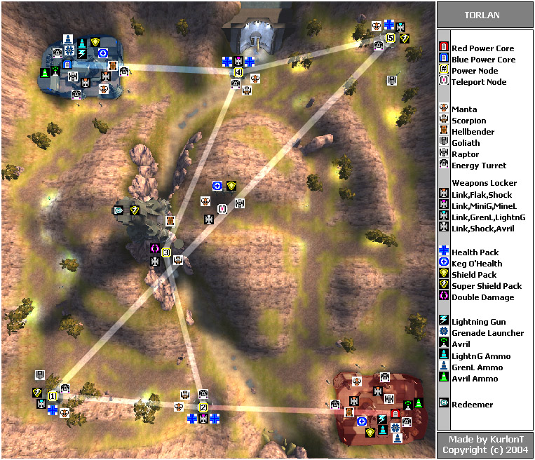
Overview:
Torlan is the most open map of the bunch. All nodes but the middle one - which
is located in a narrow canyon - have straight vision to almost everywhere. All
those open nodes are armed with a turret, but AVRiL's are kinda rare. This makes
vehicles an important factor in this map, so you better learn to manage yourself
on foot with the other weapons...
Match setup:
Immediately start by heading out to the first node, behind the steep hill. The
best way is by manta, but a fully loaded hellbender is a good choice as well.
The raptor has a special goal in this map: it is the only vehicle that can grab
the redeemer on top of the level. Since nodes are hard to destroy on this map,
the purpose of the redeemers is even more important than on other maps.
After the first node is set up, it's best that the manta proceeds toward the
tank node while the hellbender makes its way to the canyon.
The center node will be the focus of the action; it's always a good idea to
use the tank to gain control of the canyon.
Airborne vehicles are known to make stealth attacks on the tank nodes, or at
least the tank if it's still around. Though this approach takes more time than
the blitzkrieg from the center to their node, it's also a part every team should
be aware of. If the tank node gets captured, the enemy team will have a tank
that has a more than decent position to attack the first node.
Most games end the moment the first node is destroyed. That node has a lower
location than the adjacent ones, which allows the enemies to delay the reconstruction
of that node easily. The enemies on the other hand, don't have much problems
claiming the isolated nodes and pushing back the players to the power core.
Comebacks are rare once the first node is captured: the tank (from the nearby
tank node) provides defence from far away and infantry can cover the place with
spider mines. The power core base is a real fortress, complete with high walls
and turrets. Unfortunately, the core is pretty much in the open, which makes
it an easy target for airborne vehicles.
But even with the first node captured, the fight isn't over: a fully manned
hellbender can quickly cut through the node's defenses and destroy it fast.
They can also bring in backup that snipes or AVRiL's from their base's tower.
Still, its no match for a defending tank.
And about that tanks: remember you have two of them! Your own tank node isn't
exactly near their base, but its firepower really helps out.
As a wild card, there's a redeemer on top of the tower, together with a super
shield pack and a nice overview of the level. The disadvantage is that this
place is only reachable by raptor. From up there, you can snipe everyone and
lock in on every vehicle. And of course tear down some enemy nodes with the
redeemer...
Strategies/tactics:
- when the enemy team has the central node, you can push the vehicles that spawn on top of the hill from the platform. On many occasions, the enemies won't even suspect their vehicles are still close by
- the hellbender that spawns in the center is a good tool to snipe down on people and even vehicles (like raptors) from far away
- the center is also a good spot for long distance shots and AVRiL-targetting
- make sure you defend your first node if it isn't locked: the turret is a good weapon to stop incoming redeemers and light vehicles
- manta's can use the hill between the first node and the base to jump all the way into the power core base
- with a bit of practice, manta's can make it to the top of the towers in the bases: they just need a running start and the right place to lift off. To get on blue's tower, you must use the hill nearby the center tower. For red's tower, you must use the mountains on the side of the level to boost yourself up there
- if you respawn in the canyon, there are two ways to reach the top: either use the jump pad nearby, or use the node to transport yourself to the same node again
- if you fall down from the top of the center tower, try to land on the jump pad: if you manage to land on it, you won't get falling damage
- don't use the damage amp to link up the center node: it won't speed things up
- if you have the enemies locked at their base: don't forget you have 2 tanks now. You can use it to effectively blast the base from the side entrance
Aridoom
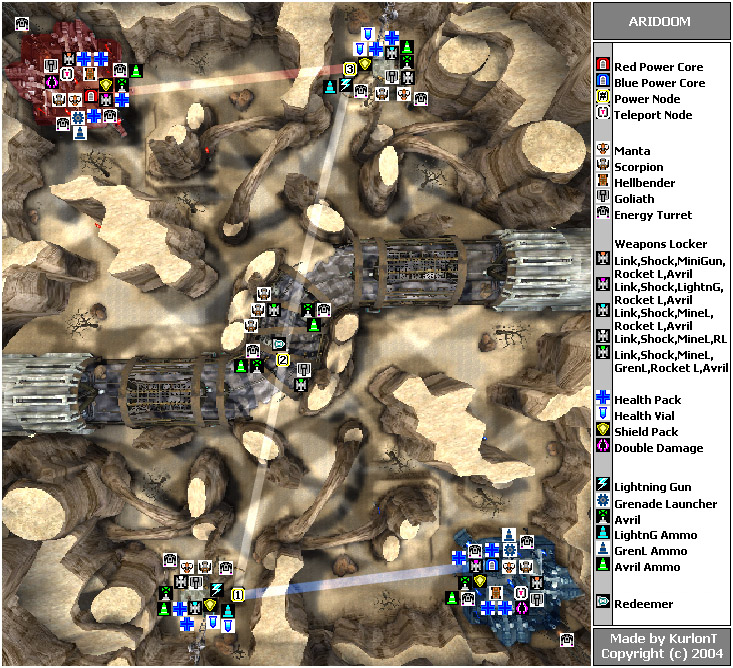
In case you haven't downloaded the OnslaughtBonusMapPack, I suggest you do so now. This 'pack' contains 2 new, semi-official maps, made by professional mappers. Initially, this pack was released as windows-only (don't know why?), but they are available for all OS's as well (I hope I'm linking to the universal one).
Overview:
If you ask me, Aridoom is is set on Tattooine. The rocky desert can be anywhere
and the old garages and freeway can be accidental as well, but this map even
plays like a variant of a podrace. There are no multiple node routes
and no true airborne vehicles around, so it's all a matter of which team can
transport the most firepower in the shortest amount of time.
Match setup:
This map is setup in a way that there are always two routes between each node
of about the same length. Between the base and the first node, you have the
choice of going over open terrain, or through a dry riverbed. These routes join
at a hill, after which you can see the first node, located in a garage. Unlike
what you would expect, the node is located on the side of the garage, though
all the vehicles spawn inside.
To get to the central node, you'll have to find an entrance to the freeway.
There is one on the far left from the garage, another one on the far right of
the map, and finally one close by the center. The last one is a bit shorter
when coming from the garage, but involves more z-axis. The center is the first
place of combat, so make sure you keep an eye out for enemies. This center node
is at about the same distance to all other nodes and bases, so attack the center
from both sides.
Keeping the center isn't easy, because the other team can attack it from both
sides as well. Luckily, there are the turrets that can keep them away and there
is also another tank present.
It's easy to miss, but this center contains a redeemer: it's located directly
above the node, over a long balk. To reach it, you must jump on top of some
boxes; you can use a manta to get closer, but don't try to park on the balk
itself. This redeemer is the main reason to keep defense at the first node if
it's vulnerable, but it also leads to quick changes in the match because enemies
can also sneak in to grab it and quickly destroy the center node.
Even to attack their first node is the base in a good position: it's almost
a straight line, whereas you must make a quite long detour if you're coming
from the center node. The first node can be defended very good, so try to co-ordinate
your attack (this includes your redeemer missile: only launch it when there
are team mates underway).
Even the final step isn't easy, because the base is even a better fortress than
the garage. Sneak in from both sides, but don't neglect to defend the adjacent
node...
Strategies/tactics:
- timing is a very important factor here. Co-ordinated attacks are much more powerfull than lone wolf attacks
- for the same reason: don't abandon your team mates if you're in a faster vehicle than they are, except at the beginning of a match
- the damage amp is meant for the manta: other vehicles are too slow to gain an advantage with the damage bonus
Ascendancy
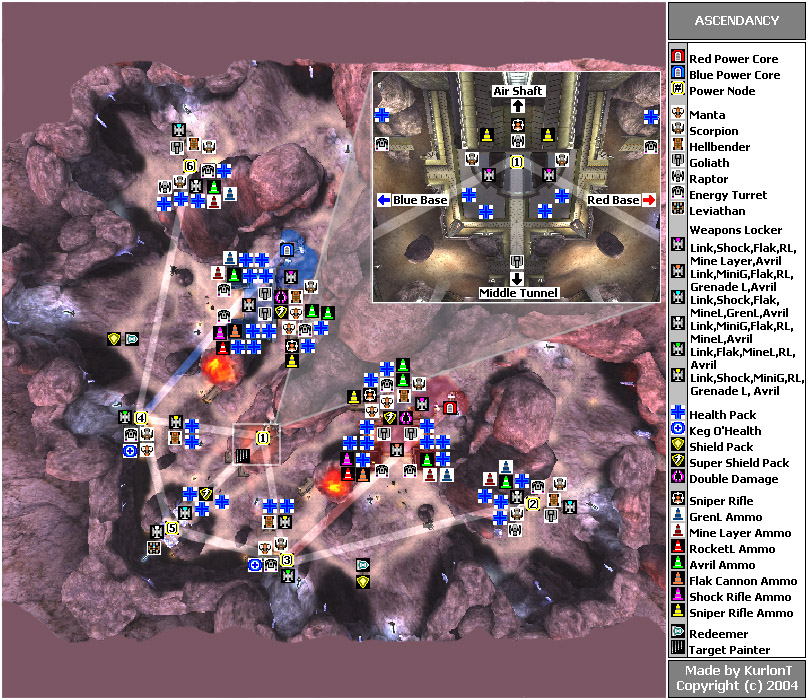
The second map of the OnslaughtBonusMapPack, the first one being Aridoom.
Overview:
From above, this dusky map is shaped like a crescent. Don't let this fool you:
the level is huge. Both bases are open and stretched out, with a big front gate
and a backdoor to the sidenode. The center part of the map is a big mountain,
which will be fought over both from the outside and the inside.
Match setup:
The beginning of the match is always the same: everyone gets through the front
gate in the direction of the first node. Only one manta should head in the direction
of the sidenode (also through the front gate: going through the back of the
base goes too slow), touch it and turn back toward the first node. Oh, and he
should pick up the 'deemer which spawns about at this time.
While the fastest vehicles arrive at the first node, the rest of the team should
split up: a part should stay outside and head for the outside node; since this
outside node spawns a leviathan, it is the most important one to claim. Prevent
the enemy team to build the node at all cost, because it is strong enough to
make it toward the first node and to destroy it, even if your entire team is
fighting against it.
Meanwhile, the other part of the team should go through the tunnel to the inside
of the mountain. There are only 3 entrances to the node inside, so it can be
controlled a lot better than the chaotic outside node. The node also spawns
2 strategically important vehicles: the raptor, which has its own exit through
the roof, can reach every part of the map easily. The other vehicle is the tank:
this spawns underneath the central entrance; it can exit through the side entrance
fast and attack the first node from the least defended side.
In many occasions, destroying the first node determines the winning team (which
is also a reason why many servers use a different link setup). Once it is conquered,
the attacking team has easy access to a redeemer, target painter (on top of
the mountain) and a leviathan, and an even chance to grab the redeemer close
by the defending team's base. These defenders still have a lot of firepower
in their base, and it won't be easy to infiltrate all the way to the power core
(not even with airborne vehicles). If things really take too long, shift your
focus to their sidenode; they can't spare the effort to seriously defend it,
so capturing is a possibility. Once this is completed, you can cross the rough
terrain to enter their base right next to the power core.
Strategies/tactics:
- there are plenty of vehicles lying around, but infantry is far from useless: the central mountain has plenty of balconies from where they can AVRiL down on enemies and even attack nodes. The many jump pads even increase their possibilities, just like the target painter that lies in the center. Note that this target painter can not directly target the outside node
- take care of the redeemers: just as in Severance, they make sure that nodes can change hands fast
- the description advises 16-22 players, but it plays just as fine with only 12
Icarus
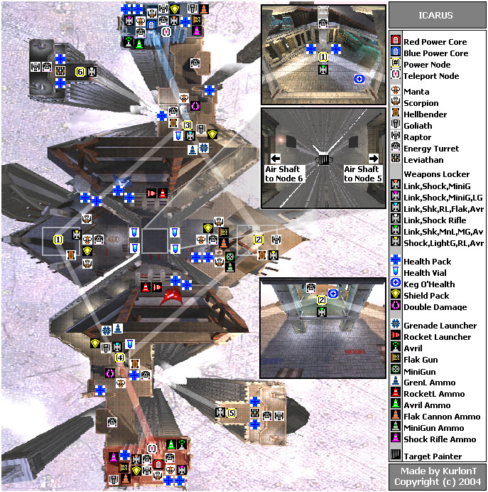
Icarus was the first map to receive the 'ownage' award. This means that you can grab this map from ingame: from the main menu, go to 'Community-Ownage maps'. The big question is: does this first map live up to its expectations? To be honest: it's somewhat of a mixed bag. Nobody can deny the professionalism that is used to construct and balance out this level, but since the extreme amount of z-axis makes this a classic love-it-or-hate-it kinda map...
Overview:
The entire level takes place on the top floors of skyscrapers. This makes navigating
non-airborne vehicles rather hard, because on many occasions you have to change
floors to get to your destination. A good rule of thumb is that if you're on
a fork, you best take the highest road. If you turn out to be higher than your
destination, you can simply drop down (assuming there is a floor below).
There are many ramps scattered through this level: hellbenders and scorpions
can use them to hop to the other side, but only if they can get there
unhindered and if they have a decent running start. A running
dodgejump gets you on the other side as well. Tanks simply can not
make it to the other side.
The last feature is also the one most complained about: there is a building
alongside the first node that contains a restricted leviathan.
Match setup:
The main base consists of 3 levels. Use the jump pads to reach the top and middle
ones, because they contain the best vehicles (a raptor and manta).
To get to the first node, you'll have to cross a long platform; infantry can
use jump pads to speed up their travelling. Once the first node is up, things
get more complicated.
The building that lies in front of you blocks the way to the central square.
This square is surrounded by four buildings in total, each of which have a balcony.
When you go left at your node, you'll end up at the balcony. The lower right
route leads to the square, just as the route on the inside of the building does.
As you can see on the map, the two buildings on the side make out the nodes.
Node 1 lies in an urban valley, one floor below the square. Enemies can drop
down from above, but the vehicles spawn in a reasonable position to attack the
enemy first node.
Node 2 is positioned one floor above the balcony: it can be seen (and thus destroyed)
from far away, but it's not easy to approach it if you're not in an airborne
vehicle.
But there is more going on in the node buildings: underneath the square are
small balconies that offer a nice view from the scenery below. Far down lies
a balk with a target painter on it, just as well as a teleporter that gets you
back to the square again. I advise against picking it up, though. The time you'll
spend taking it can be used a lot better...
Let's go back to the first node: non-airborne vehicles should always take the
left route; they can use the ramps to hop to the nearby node buildings, or they
can drop down to the square if they have to. The raptor pilot should touch the
sidenode (not linking it up) and immediately head for node 2. Meanwhile, manta's
can provide backup or scouting for either group.
Once you gain control of a center node, all the airborne vehicles should make
their way to the other team's first node. Land vehicles aren't a good choice
attacking it, because it takes too much time to navigate them into the right
position. Don't attack with them until the first node is effectively destroyed
and the enemy team has to retreat to rebuild their node. Airborne vehicles should
either delay this rebuilding, or conquer the other central node, depending on
what's the easiest job.
The next part is the hardest: this is the part where the enemies will man their leviathan. Many teams try to defend the node, attack their power core and pick on the leviathan...all at the same time. This rarely - if ever - works. I suggest you stop the attack and focus on their levi, while you deny them their first node. Repeatedly using the 3 available raptors should bear results quickly. The hard part is over when the levi is down: now focus all your efforts on claiming their first node and defend it with everyone but one. This last fellow captures the sidenode and - in turn - mans the leviathan. If he deploys it, he can take take shots at the enemy base; 3 or 4 blasts should destroy the core from splash damage.
Strategies/tactics:
- airborne vehicles are by far the best choice for attacks
- the team that has node 2 on their left side can hit this node with their tank from nearby their first node
- ground troops can also harass the levi, by shooting both regular and AVRiL rockets at it, but they should always be prepared to take cover
- stop harassing the leviathan if the rest of your team can't prevent the
enemy team from reclaiming their node and their leviathan node is already
destroyed. In this scenario, they can simply rebuild the sidenode and get
a fresh levi